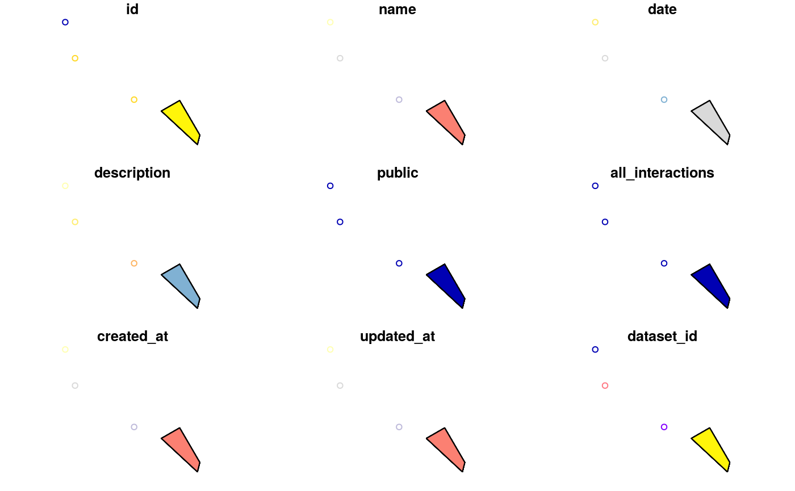

vignettes/test_vignette.Rmd
test_vignette.Rmdrmangal is a R client for MANGAL API. MANGAL is a collection of 172 datasets representing over 1300 published ecological networks.
all_datasets <- search_datasets()
#> Found 172 datasets
all_datasets[1:6, c("id", "description")]
#> id
#> 1 2
#> 2 7
#> 3 9
#> 4 14
#> 5 15
#> 6 16
#> description
#> 1 Insect activity recorded on flower at Lake Hazen, Ellesmere Island, N.W.T., Canada
#> 2 Pollnator activity recorded on flowers, Uummannaq Island, Greenland, Danmark
#> 3 Flower-visiting insect at Mt. Latnjatjarro, northern Sweden
#> 4 Predation by short-eared owls on a salicornia salt marsh
#> 5 Pelagic communities of small lakes and ponds of the Adirondack
#> 6 Food web for the Crystal River estuaryarea <- us_states(state="california")
networks_in_area <- search_networks(area)
#> Spatial query mode
#> although coordinates are longitude/latitude, st_contains assumes that they are planar
#> Found 14 networks
plot(networks_in_area)
#> Warning: plotting the first 9 out of 10 attributes; use max.plot = 10 to
#> plot all
resTsn <- search_taxa(tsn = 28749)
#> Found 1 taxa involved in 1 network(s)
resNcbi <- search_taxa(ncbi = 47966)
#> Found 1 taxa involved in 1 network(s)
resEol <- search_taxa(eol = 583069)
#> Found 1 taxa involved in 1 network(s)
resBold <- search_taxa(bold = 100987)
#> Found 1 taxa involved in 1 network(s)